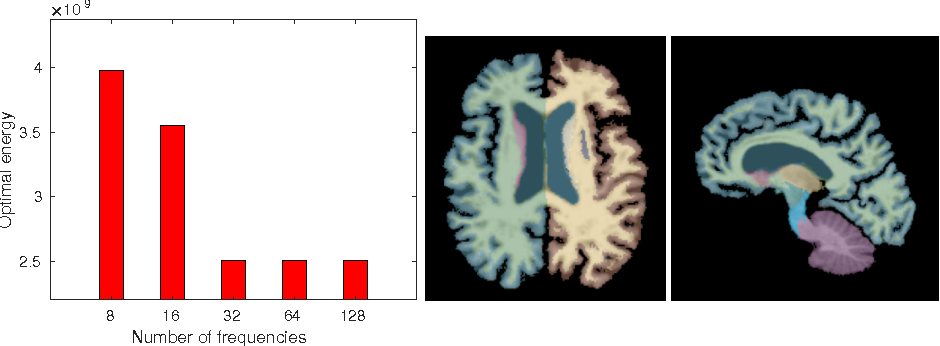

Frequency Diffeomorphisms for Efficient Image Registration
Miaomiao Zhang, Ruizhi Liao, Adrian V. Dalca, Esra A. Turk, Jie Luo, P. Ellen Grant, and Polina Golland

Left: average optimal energy for different values of the truncated dimension n = 8, 16, . . . , 128. Right: example propagated segmentation with 35 structures obtained by our method. 2D slices are shown for visualization only, all computations are carried out fully in 3D.
Abstract
This paper presents an efficient algorithm for large deformation diffeomorphic metric mapping (LDDMM) with geodesic shooting for image registration. We introduce a novel finite dimensional Fourier representation of diffeomorphic deformations based on the key fact that the high frequency components of a diffeomorphism remain stationary throughout the integration process when computing the deformation associated with smooth velocity fields. We show that manipulating high dimensional diffeomorphisms can be carried out entirely in the bandlimited space by integrating the nonstationary low frequency components of the displacement field. This insight substantially reduces the computational cost of the registration problem. Experimental results show that our method is significantly faster than the state-of-the-art diffeomorphic image registration methods while producing equally accurate alignment. We demonstrate our algorithm in two different applications of image registration: neuroimaging and in-utero imaging.
1 Introduction
Diffeomorphisms have been widely used in the field of image registration [6, 7], atlas-based image segmentation [4,10], and anatomical shape analysis [14, 22]. In this paper, we focus on a time-varying velocity field representation for diffeomorphisms as it supplies a distance metric that is critical to statistical analysis of anatomical shapes, for instance, by least squares, geodesic regression, or principal modes detection [13,16,22].
In spite of the advantages of supporting Riemannian metrics in LDDMM, the extremely high computational cost and large memory footprint of the current implementations has limited the use of time-varying velocity representations in important applications that require computational efficiency. The original LDDMM optimization performs gradient decent on the entire time-varying velocity field that is defined on a dense image grid. Since a geodesic is uniquely determined by its initial conditions on the velocity field, the geodesic shooting algorithm has been shown to reduce the computational complexity and improve optimization landscape by manipulating the initial velocity via the geodesic evolution equations [20]. FLASH (finite dimensional Lie algebras for shooting) [23] is a recent variant of LDDMM with geodesic shooting that employs a low dimensional bandlimited representation of the initial velocity field to further improve the convergence and efficiency of the optimization. The algorithm still maps the velocity fields from the low dimensional Fourier space back to the full image domain to perform forward integration at each iteration [23]. The computational complexity of this step thus dominates the entire procedure of diffeomorphic image registration.
Previous works that aimed to improve diffeomorphic representations have reduced the high degrees of freedom available to represent the velocity fields, but not the diffeomorphisms themselves. In this paper, we adopt the low dimensional representation of the tangent space of diffeomorphisms [23] and propose an efficient way to compute diffeomorphisms in the bandlimited space, thus further reducing the computational complexity of image registration. Our approach is based on the important insight that only the low frequency components of the diffeomorphisms vary over time when integrating a bandlimited velocity field to obtain the deformation. Since the optimization of image registration can be directly solved by advecting the inverse of diffeomorphisms [17], we propose a novel Fourier representation of the deformation in the inverse coordinate system that is computed entirely in the low dimensional bandlimited space. The theoretical tools developed in this paper are broadly applicable to other parametrization of diffeomorphic transformations, such as stationary velocity fields [2,3,19]. To evaluate the proposed algorithm, we perform image registration of real 3D MR images and show that the accuracy of the propagated segmentations is comparable to that obtained via the state-of-the-art diffeomorphic image registration methods, while the runtime and the memory demands are dramatically lower for our method. We demonstrate the method in the context of atlas-based segmentation of brain images and of temporal alignment of in-utero MRI scans.
{% endblock content%}